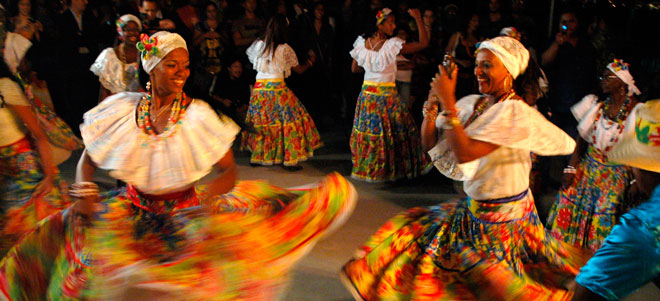
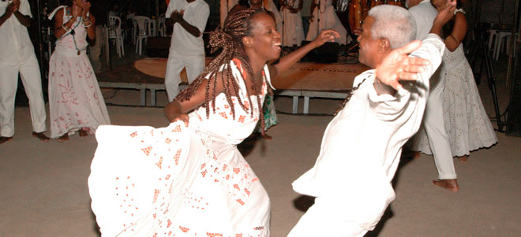

Tambor de Crioula
O Tambor de Crioula é uma forma de expressão negra brasileira que envolve dança circular de mulheres e ocorre na maioria dos municípios do Maranhão. Os tocadores e cantadores, também denominados coreiros, são conduzidos pelo ritmo incessante dos tambores e a força das toadas evocadas, culminando na punga (ou umbigada).
Jongo
O Jongo é uma forma de expressão negra brasileira praticada no meio urbano e em comunidades rurais do Sudeste brasileiro. Acontece nas festas de santos católicos e divindades afro-brasileiras. É uma forma de reverência aos antepassados e afirmação das identidades negras.